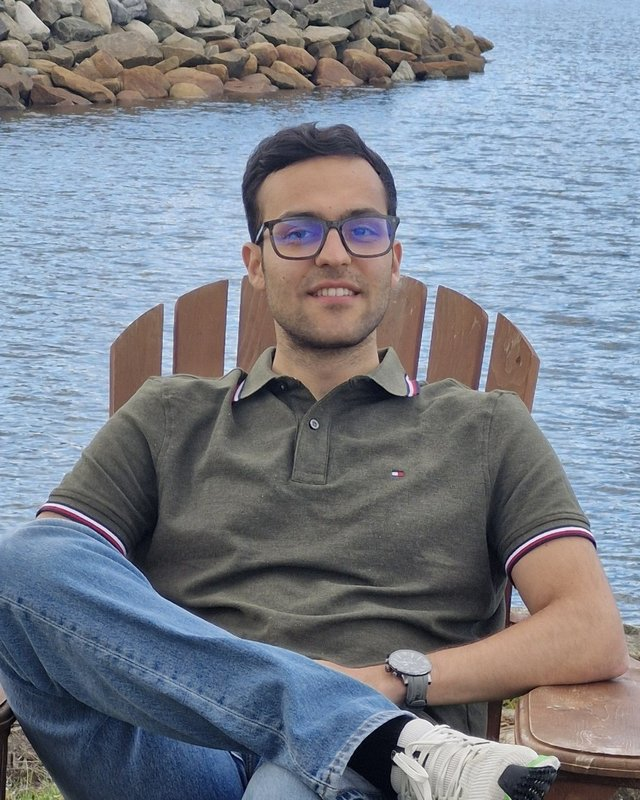

Erfan Nosrati
Ph.D. Student, Computer Science
University of Calgary
Hi! I'm a Ph.D. student in Computer Science at the University of Calgary, where I work with Prof. Rachit Agarwal at Cornell University and Prof. Majid Ghaderi at the University of Calgary.
I work on networking for distributed training. Training today's large models spreads work across many GPUs and machines, and the network that connects them is often what holds everything back. I study how these networks behave in practice, trace where their inefficiencies come from, and design ways to improve them, so that GPUs spend their time computing instead of waiting on the network.
During my master's, advised by Prof. Majid Ghaderi, I worked on load balancing in data center networks, which led to our paper Congestion-Aware Path Selection for Load Balancing in AI Clusters. Before grad school, I studied Electrical Engineering at Sharif University of Technology and worked as a DevOps engineer at Torob.
Publications
Education
- Ph.D., Computer Science, University of Calgary
- M.Sc., Computer Science, University of Calgary, advised by Prof. Majid Ghaderi
- B.Sc., Electrical Engineering, Sharif University of Technology
Experience
- DevOps Engineer, Torob
- Software Developer, Resalat Salamat Iranian